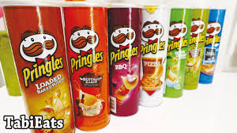

The most important question of the day is both pivotal and mundane at the same time.
It's one we've
all asked someone else at some point in our lives (possibly incessantly). It's also a question we've each had to answer
at least once.
The answer, however, is never the same and it depends entirely on who you are, who's responsible
for providing the meal, and what resources are available.
If you're younger than ten years old:
It's likely that you'll have to ask a parent, "What's for dinner?" Every day you ask, and you always have the answer
you want to hear already pictured in your mind.
The only correct answer is that, "dinner tonight will be a giant pot
of cheesy macaroni and you can eat as much of it as you want!" Anything different is a huge disappointment.
If you're the parent of a child under the age of ten:
You already know the answer he/she wants to hear and sometimes find joy in coming up with alternative offerings.
If the child has been especially thoughful and obedient
lately, maybe a giant pot of macaroni is in order. On the
other hand, if the child has been especially snippy lately, stuffed green-peppers may just be for dinner. This,
of course, could be followed by the added punch of ice cream sundaes
for dessert to anyone who finishes their meal.
If you're an adult responsible for providing your own dinner:
As long as you have no one else to please, your options are usually pretty simple. Whatever decision you make
each evening is most likely preceded by these two questions:
-
1) "Do I really feel like cooking and then cleaning it all up afterward?"
2) "Does my budget allow me to just order take out instead?"
If ordering out, your options are pretty simple; limited only by your personal preferences. If you'll be going through
the motions of cooking, however, you'll probably find yourself staring into the abyss of your
refrigerator or pantry
hoping to come up with a winning combination of ingredients. In this scenario, however, you may discover that
although the shelves are full there is nothing edible in your kitchen and opt for take-out
anyway.
If you're not quite an adult but still responsible for
providing your own dinner:
(i.e. College student living on a next-to-nothing budget), your options may still be pretty simple.
More than likely,
the only items in your pantry are Ramen noodles, spaghetti and pasta sauce, and a partial loaf of bread. The only
items in your refrigerator are the remnants of
Friday nights pizza and a stick of butter. In this scenario, the least
amount of clean-up afterward is best, and Ramen noodles will probably be for dinner.
But, if you're my husband...... :
The answer will always be "Pringles!"
